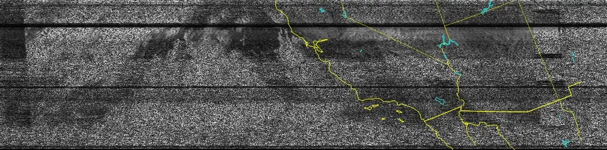

They are low quality because I do this indoors with a suboptimal antenna. I dream of one day having a more optimal setup with a NOAA band pass filter. Hopefully I can do this before APT satellites become a thing of the past. NOAA-15 is already on its last leg.
Here is an image from NOAA-18.
Another image from NOAA-18 from a different day.

Here is one from NOAA-19.